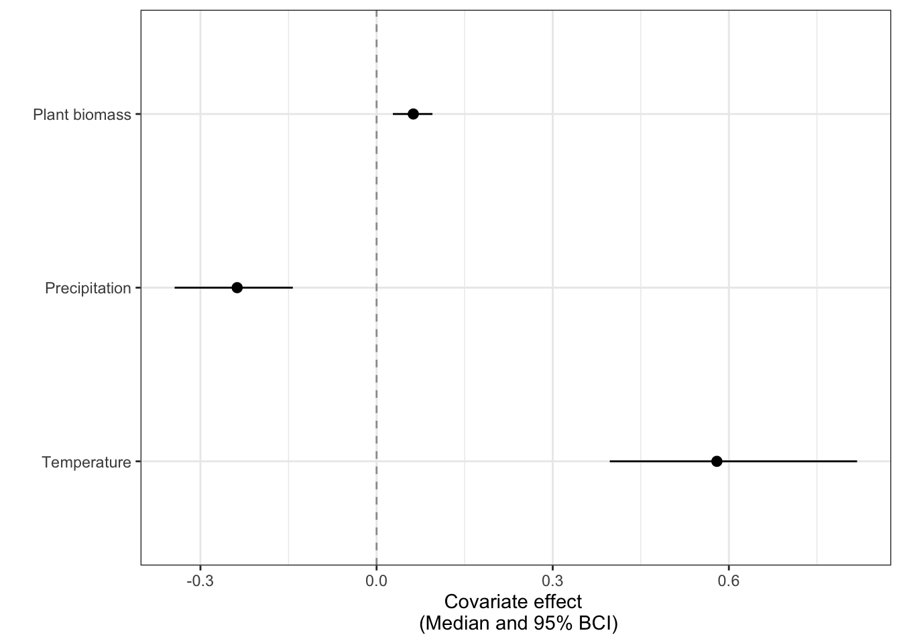
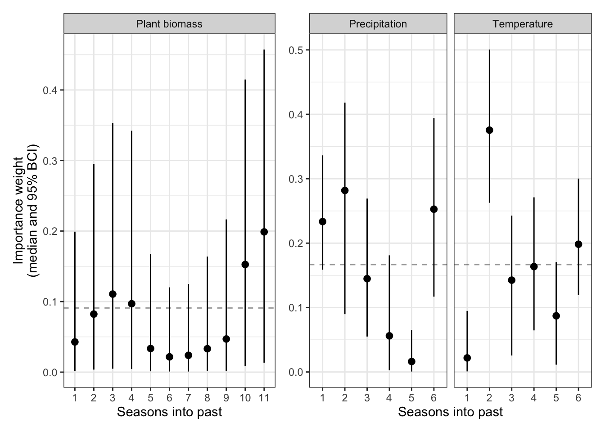

model{
for(i in 1:n.data){
#-------------------------------------##
# Likelihood ###
#-------------------------------------##
#d is dissimilarity and is proportional, so beta distribution works here
d[i] ~ dbeta(alpha[i], beta[i])
#var.process is scalar but could be made dependent on site/other variables
#phi incorporates mu (mean estimate), var.estimate (which is from
#"data" on standard deviation (squared) from the original detection
#correction model)
#and var.process is something we're trying to estimate,
#basically, the rest of the variation not accounted for
phi[i] <- (((1-mu[i])*mu[i])/(var.estimate[i] + var.process))-1
#alpha and beta are based on mu and phi values
#sometimes these values send alpha and beta outside
#the domain, so we have extra code below to get them to
#stay where they belong
alphaX[i] <- mu[i] * phi[i]
betaX[i] <- (1 - mu[i]) * phi[i]
#here is where we get alpha and beta to stay in their
#domain
alpha[i] <- max(0.01, alphaX[i])
beta[i] <- max(0.01, betaX[i])
#to get a good estimate of a prior for var.process, we
#track the difference between these two values for each
#data point
diff[i] <- (1-mu[i])*mu[i] - var.estimate[i]
#Regression of mu, which is dependent on a hierrarchically-centered
#site random effect and the weighted antecedent effects of two covariates,
#plant biomass and temperature
logit(mu[i]) <- b0.site[Site.ID[i]] +
b[1]*AntPlant[i] +
b[2]*AntTemp[i]
#-------------------------------------##
# SAM summing ###
#-------------------------------------##
#summing the antecedent values
AntPlant[i] <- sum(PlantTemp[i,]) #summing across the total number of antecedent years
AntTemp[i] <- sum(TempTemp[i,]) #summing across the total num of antecedent months
#Generating each year's weight to sum above
for(t in 1:n.plantlag){ #number of time steps we're going back in the past
PlantTemp[i,t] <- Plant[i,t]*wA[t]
#imputing missing data
Plant[i,t] ~ dnorm(mu.plant, tau.plant)
}
#generating each month's weight to sum above
for(t in 1:n.templag){ #number of time steps we're going back in the past
TempTemp[i,t] <- Temp[i,t]*wB[t]
#missing data
Temp[i,t] ~ dnorm(mu.temp, tau.temp)
}
#-------------------------------------##
# Goodness of fit parameters ###
#-------------------------------------##
#
#replicated data
d.rep[i] ~ dbeta(alpha[i], beta[i])
#
#residuals
resid[i] <- d[i] - mu[i]
}
#-------------------------------------##
# Priors ###
#-------------------------------------##
# ANTECEDENT CLIMATE PRIORS
#Sum of the weights for lag
sumA <- sum(deltaA[]) #all the plant weights
#Employing "delta trick" to give vector of weights dirichlet priors
#this is doing the dirichlet in two steps
#see Ogle et al. 2015 SAM model paper in Ecology Letters
for(t in 1:n.plantlag){ #for the total number of lags
#the weights for kelp - getting the weights to sum to 1
wA[t] <- deltaA[t]/sumA
#and follow a relatively uninformative gamma prior
deltaA[t] ~ dgamma(1,1)
#to look at how weights accumulate through time
cumm.plantwt[t] <- sum(wA[1:t])
}
#Sum of the weights for temp lag
sumB <- sum(deltaB[]) #all the temp weights
#Employing "delta trick" to give vector of weights dirichlet priors
#this is doing the dirichlet in two steps
#see Ogle et al. 2015 SAM model paper in Ecology Letters
for(t in 1:n.templag){ #for the total number of lags
#the weights for kelp - getting the weights to sum to 1
wB[t] <- deltaB[t]/sumB
#and follow a relatively uninformative gamma prior
deltaB[t] ~ dgamma(1,1)
#to look at cummulative weigths through time
cumm.tempwt[t] <- sum(wB[1:t])
}
#BETA PRIORS
#HIERARCHICAL STRUCTURE PRIORS
#hierarchical centering of sites on b0
for(s in 1:n.sites){
b0.site[s] ~ dnorm(b0, tau.site)
}
#overall intercept gets relatively uninformative prior
b0 ~ dnorm(0, 1E-2)
#for low # of levels, from Gelman paper - define sigma
# as uniform and then precision in relation to this sigma
sig.site ~ dunif(0, 10)
tau.site <- 1/pow(sig.site,2)
#covariate effects - again get relatively uninformative priors
for(i in 1:2){
b[i] ~ dnorm(0, 1E-2)
}
#PRior for process error
var.process ~ dunif(0, min(diff[]))
#MISSING DATA PRIORS
mu.plant ~ dunif(-10, 10)
sig.plant ~ dunif(0, 20)
tau.plant <- pow(sig.plant, -2)
mu.temp ~ dunif(-10, 10)
sig.temp ~ dunif(0, 20)
tau.temp <- pow(sig.temp, -2)
}3 Evaluating community stability in relation to environmental variables
We have used our estimates of detection error to correct our values of community stability. Now, we are interested in how dissimilarlity is influenced by environmental covariates at our site. However, in doing so, we also want to maintain both the mean estimate value as well as uncertainty estimated by the imperfect detection modeling process, so we will have to provide this in our model structure.
3.1 Model formulation
Our diversity metrics are functionally proportions, so the data have domain \([0,1]\). We can model proportions with a beta distribution, where the mean dissimilarity metric calculated in the previous step, \(\bar{d}_{t,y}\), is beta distributed:
\(\bar{d}_{t,y} \sim Beta(\alpha_{t,y}, \beta_{t,y})\)
We follow other beta regression approaches (CITE) to define the parameters \(\alpha_{t,y}\) and \(\beta_{t,y}\) as:
\(\alpha_{t,y} = \delta_{t,y}\phi_{t,y}\)
\(\beta_{t,y} = (1 - \delta_{t,y})\phi_{t,y}\)
In these equations, \(\delta_{t,y}\) is the mean or expected value of the stability index, \(\bar{d}_{t,y}\) and \(\phi_{t,y}\) is a precision-type term. When \(\phi_{t,y}\) is larger, the variance for \(\bar{d}_{t,y}\) (\(Var(\bar{d}_{t,y})\)) is smaller. \(\phi_{t,y}\) is defined as:
\(\phi_{t,y} = \frac{\delta_{t,y}(1-\delta_{t,y})}{Var(\bar{d}_{t,y})}-1\)
and \(Var(\bar{d}_{t,y})\) includes both known variance from the imperfect detection model, \(\hat{\sigma}^2(\bar{d}_{t,y})\), and unknown “process” variance, \(\sigma^2_{P}\):
\(Var(\bar{d}_{t,y}) = \hat{\sigma}^2(\bar{d}_{t,y}) + \sigma^2_{P}\)
We set a uniform prior for the process variance, \(\sigma^2_{P}\) with an upper limit that ensures that \(\alpha_{t,y} > 0\) and \(\beta_{t,y} > 0\).
The mean (expected) stability index, \(\delta_{t,y}\), is defined via a regression model:
\(logit(\delta_{t,y}) = \beta_{0,t} + \sum_{j =1}^J\beta_jZ_{j,t,y}\)
In this regression, \(\beta_{0,t}\) varies by a spatial factor by including a spatial random effect with priors that are hierarchically centered around a coarser spatial level, which is given a prior that varies around an overall community intercept (Ogle and Barber 2020 CITE). The coefficients \(\beta_1\), \(\beta_2\)… \(\beta_J\) denote the effects of an antecedent covariate, \(Z_{j,t,y}\) for j = 1, 2, …,J covariates. Each covariate \(Z_{j,t,y}\) is the weighted average of the current value for that covariate at time y and a defined number of past values for that covariate preceding time y. We divided these into either seasonal or yearly values for that covariate (e.g., spring temperature, yearly plant biomass). The weight (“importance weight”) of each of these values, m, in the overall calculation of \(Z_{j,t,y}\), \(w_{j,m}\), is estimated by the model using the stochastic antecedent modeling framework (Ogle et. al 2015). In this modeling framework, each \(w_{j,m}\) is estimated using a Dirichlet prior so that the sum across all weights for that covariate equals one and more important time periods, m get higher importance weights. Thus, when a covariate effect, \(\beta_j\) is significant, the weights for each time lag for that covariate informs over which timescale(s) that covariate influences community change.
3.1.1 The model translated to JAGS code
Below is example JAGS code for the model specified above:
3.2 The model in action
Because we have greatly reduced the dimensionality of our community dataset by deriving a change metric for each site in each year, y to the next year y+1, the models run efficiently enough that we can use one of the case studies from the paper in this tutorial. We will demonstrate the utility of this model for the SBC Fish LTER dataset. This LTER site also has yearly data on kelp biomass and bottom temperature data from data loggers, which we used as environmental covariates in this model.
This dataset has:
- 43 communities (survey transects) which have change data for
- 11 - 22 years, depending on the site and we calculated
- Bray-Curtis dissimilarity for this count dataset
- 11 seasons of temperature data and
- 6 years of plant data as covariates
In this dataset, we are evaluating how Bray-Curtis dissimilarity through time is shaped by the covariates of kelp biomass and temperature. You can find the dataset in tidy form herePATH
Again, to run the model in R and JAGS, we will need:
- The model file
- The data list
- A script to wrap JAGS in R
You can find all of these, along with the data simulation used in this tutorial, in the [FOLDER]
3.2.1 Running the model
3.2.1.1 The model file
You will need to provide a path to the model file (which is its own R script, written in JAGS/BUGS language, so it won’t actually run in R). You can find ours here(PATH TO MODEL FILE). You will see that we define the path to this model in our model running script below.
3.2.1.2 The data list
To run the model, we will need to provide JAGS with a data list, which you can find herePATH. We have code on how to prepare the data list herePATH
data_list <- readRDS(here('tutorials',
'SAM',
'data',
"model_inputs",
"SAM_input_data.RDS"))
str(data_list)List of 9
$ n.data : int 856
$ n.sites : int 11
$ Site.ID : Named num [1:856] 4 4 4 5 5 5 5 5 5 5 ...
..- attr(*, "names")= chr [1:856] "SITE1" "SITE2" "SITE3" "SITE4" ...
$ d : num [1:856] 0.517 0.521 0.51 0.416 0.401 ...
$ var.estimate: num [1:856] 0.01623 0.0148 0.0161 0.00984 0.0099 ...
$ n.plantlag : int 6
$ Plant : num [1:856, 1:6] -0.7964 -0.7517 -0.8167 0.0222 -0.8167 ...
..- attr(*, "dimnames")=List of 2
.. ..$ : NULL
.. ..$ : chr [1:6] "DRY_GM2" "DRY_GM2_l1" "DRY_GM2_l2" "DRY_GM2_l3" ...
$ n.templag : int 11
$ Temp : num [1:856, 1:11] NA NA NA NA NA NA NA NA NA NA ...
..- attr(*, "dimnames")=List of 2
.. ..$ : NULL
.. ..$ : chr [1:11] "TEMP_C" "TEMP_C_l1" "TEMP_C_l2" "TEMP_C_l3" ...As you can see, this data list includes indexing numbers, vectors, matrices, and arrays to pass to JAGS.
3.2.1.3 The script to run the model
Just like with the imperfect detection model, we’ll run the model using the jagsUI wrapper package. You can find this script herePATH, and the general code to run a JAGS model is provided here:
# Load packages ---------------------------------------------------------------
# Load packages, here and tidyverse for coding ease,
package.list <- c("here", "tidyverse", #general packages for data input/manipulation
"jagsUI", #to run JAGS models
'mcmcplots', #to look at trace plots
"coda") #to evaluate convergence
## Installing them if they aren't already on the computer
new.packages <- package.list[!(package.list %in%
installed.packages()[,"Package"])]
if(length(new.packages)) install.packages(new.packages)
## And loading them
for(i in package.list){library(i, character.only = T)}
# Load data ---------------------------------------------------------------
data_list <- readRDS(here('tutorials',
'SAM',
'data',
"model_inputs",
"SAM_input_data.RDS"))
# Define model path -------------------------------------------------------
model <- here('tutorials',
'SAM',
'code',
'SAM_model.R')
# Parameters to save ------------------------------------------------------
#these parameters we can track to assess convergence
params <- c('b0.site', #site-level intercepts
'b0', #overall intercept
'b', #covariate effects
'wA', #plant biomass weights vector
'wB', #temperature weights
'sig.site', #sd of site effects
'var.process') #unknown variance
# JAGS model --------------------------------------------------------------
mod <- jagsUI::jags(data = data_list,
inits = NULL,
model.file = model,
parameters.to.save = params,
parallel = TRUE,
n.chains = 3,
n.burnin =1500,
n.iter = 5000,
DIC = TRUE)
# Check convergence -------------------------------------------------------
#
mcmcplot(mod$samples)
#
gelman.diag(mod$samples, multivariate = F)Again, depending on your computer and/or datasets, you may need to re-run this model with initial values for root nodes and use cloud computing to run this model.
3.2.2 Model results
Once you have a resulting model file (which could be quite large), you can generate a summary of it:
sum <- summary(mod$samples)We can look at estimated values from this summary to assess how plant biomass and temperature impact SBC LTER fish communities.
3.2.2.1 Covariate effects
#pull median and 95% BCI out of the summary file:
betas <- as.data.frame(sum$quantiles) %>%
#get parameter names to be a column
rownames_to_column(var = "parm") %>%
#select only the covariate effect betas
filter(str_detect(parm, "b")) %>%
filter(!str_detect(parm, "b0"))
#plot these median and 95% BCI values
ggplot(betas, aes(x = `50%`, y = parm)) +
geom_vline(xintercept = 0, linetype = 2, alpha = 0.4) +
geom_pointrange(aes(x = `50%`,
y = parm,
xmin = `2.5%`,
xmax = `97.5%`),
size = 0.4) +
scale_y_discrete(labels = c("Kelp biomass", "Temperature")) +
labs(x = "Covariate effect \n (Median and 95% BCI)",
y = "") +
theme_bw()
This figure suggests that there is a clear effect of temperature, but not plant biomass, on community change. Higher temperatures lead to higher community change. We can then look at which seasons drive this temperature effect:
#pull the median and 95% BCI weights for temperature out of the model summary file
fish_tweights <- as.data.frame(sum$quantiles) %>%
rownames_to_column(var = "parm") %>%
filter(str_detect(parm, "wB")) %>%
#indicate which type of season they're in
mutate(season = case_when(parm %in% c("wB[1]", "wB[3]", "wB[5]",
'wB[7]', 'wB[9]','wB[11]') ~ "Warm",
parm %in% c("wB[2]", "wB[4]", 'wB[6]',
'wB[8]', 'wB[10]') ~ "Cold")) %>%
#get the years into the past for each of these seasons
mutate(year = case_when(parm == "wB[1]" ~ 0,
parm %in% c("wB[2]", 'wB[3]') ~ 1,
parm %in% c('wB[4]', 'wB[5]') ~ 2,
parm %in% c("wB[6]", 'wB[7]') ~ 3,
parm %in% c("wB[8]", 'wB[9]') ~ 4,
parm %in% c("wB[10]", 'wB[11]') ~ 5,
TRUE ~ NA_real_)) %>%
complete(season, year)
#indicate colors for seasons
warmcol <- '#d8b365'
coldcol <- '#5ab4ac'
#plot these median and 95% BCI values.
fish_tweights %>%
ggplot(aes(x = year, y = `50%`, color = season, shape = season)) +
geom_hline(yintercept = 1/11, linetype = 2, linewidth = 0.1) +
geom_pointrange(aes(ymin = `2.5%`, ymax = `97.5%`),
position = position_dodge(width = 0.5), size = 0.4) +
scale_x_continuous(breaks = c(0, 1, 2, 3, 4, 5)) +
scale_color_manual(values = c("Warm" = warmcol, "Cold" = coldcol),
breaks = c("Warm", "Cold")) +
scale_shape_manual(values = c("Warm" = 17, "Cold" = 16),
breaks = c("Warm", "Cold")) +
labs(x = "Years into the past",
y = "Importance weight \n (Median and 95% BCI)",
shape = "", color = "") +
theme(legend.position = c(0.92, 1.1)) +
theme_bw()
The dashed line indicates the values of importance weights if they were all equal (their prior weights). Any values clearly above this line indicate more important seasons for the temperature effect. There is a fairly clear effect of the previous cold season on community change, with less but still slight effects of the current warm season and every other cold season in the past. This figure suggests that when the previous cold season is relatively warm, there is more community change.
3.3 Wrapping up
For all models, you will want to be able to describe some kind of goodness-of-fit metric. We do this by replicating data in the model (e.g., d.rep in the model above) and then comparing the relationship between replicated data and observed data using a simple linear regression. You can find an examplePATH of this process in the code for the paper.